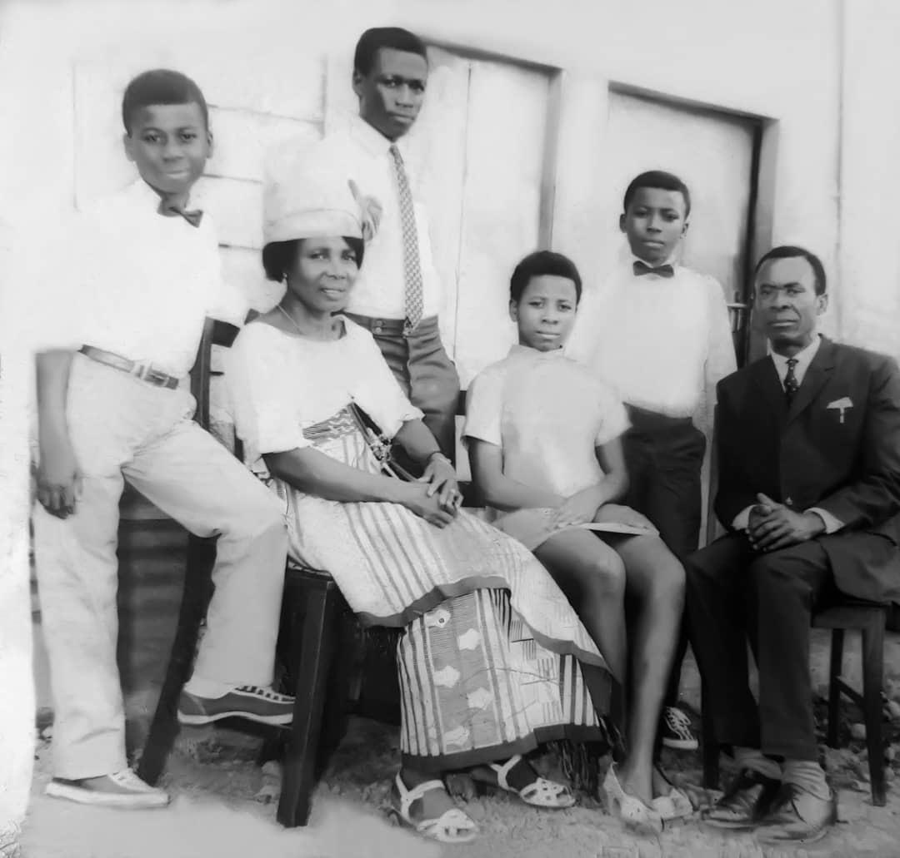

Born with a Pen in Her Hand
On the 24th of May, 1956, Mum was born at a hospital in Port-Gentil, Gabon. Our grandmother, Comfort Orjioke, was flown to the hospital by helicopter to put to birth, and Mum was later carried home in a John Holt helicopter, the company our grandfather worked at then.
Our grandfather, Papa, made the journey to that hospital carrying a pen. He opened Mum's tiny newborn hand, placed the pen inside it, and gently folded her fingers around it. Nobody could explain how a baby only hours old held on to it, but she did.
Papa named her Victoria and Ofodimma, one name meaning victory, the other meaning purity. Two names that were not wishes but prophecies, spoken over a life that had only just begun. From her very first breath, Mum already bore the mark of her father: his complexion, his face, his quiet insistence on doing things right and doing them well.